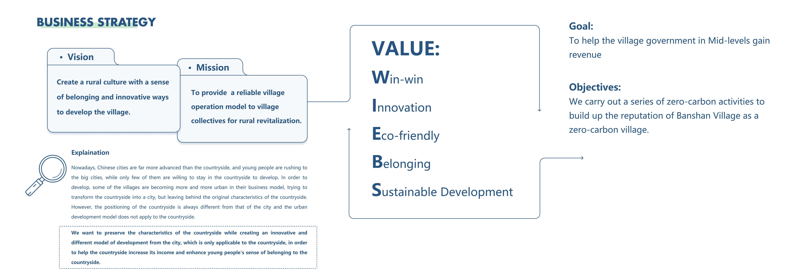

Rural Revitalization
 Figure: business strategy of banshan cun; service blueprint;the first roadmap:kick out;the output:guidebook et.al.
Introduction
Rural revitalization and Zero Carbon Future Village are guidelines that our country has been insisting on and calling for. With the invitation of the Village Manager of Serenity Village, we have designed a series of social innovation strategies in conjunction with Serenity Village's existing approach to the village's collective economy, with the aim of helping Serenity Village move towards a Zero Carbon Future Village through a low-carbon, highly profitable business model.
For more details, please refer to the video and paper linked at the bottom of this page.
Authors
Mengyang li, Zhuojia Lv, Yan Tang
More Information
the project of Social Innovation
Date: 19 April 2023
Collaboration with Hybrid Lab.
Notes
This was my first project in the fabrication field, where I primarily provided visual support while also learning a great deal about fabrication techniques. I’m especially grateful to Dr. Yang for her invitation and guidance throughout this project. Through this experience, I gained a basic foundation in Human-Computer Interaction (HCI). I also learned how to take an idea and develop it into a full research project, as well as how to effectively manage a team. These skills have been invaluable in preparing me to lead future research and projects of my own.
-
Paper